Earth Science · Discovery Project
Brazil
Land of Rivers, Rainforests
& Remarkable Wonders
Exploring the geophysical processes shaping the world's fifth-largest nation.
Begin Exploring ↓
Earth Science · Discovery Project
Exploring the geophysical processes shaping the world's fifth-largest nation.
Begin Exploring ↓Brazil is the largest country in South America and the fifth largest in the world by both area and population. As the only Portuguese-speaking nation in the Americas, it occupies a unique position in global culture, economics, and ecology. From the colonial era beginning in the 1500s, through independence in 1822, to rapid industrialization in the twentieth century, Brazil has forged a rich multicultural identity blending indigenous, African, European, and Asian heritages.
Economically, Brazil is a major agricultural exporter — leading global exports of coffee, soybeans, and sugarcane — and ranks among the world's top ten economies. With over 215 million inhabitants speaking dozens of indigenous languages alongside Portuguese, Brazil embodies remarkable human diversity set against some of the planet's most breathtaking natural landscapes.

Brazil is politically and geographically divided into five major regions by the Brazilian Institute of Geography and Statistics (IBGE). Each region possesses distinct geological basements, biomes, economic structures, and cultural identities shaped by historical migration patterns and climate controls.
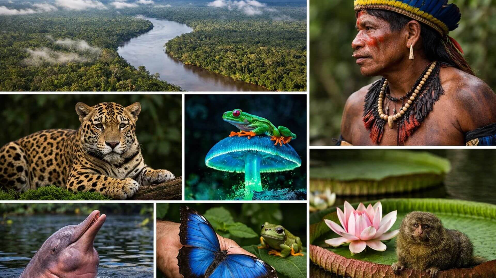
The largest region by area, dominated by the equatorial climate and the dense hydrographic network of the Amazon Basin. It contains significant ancient crystalline shields and unmatched planetary biodiversity.
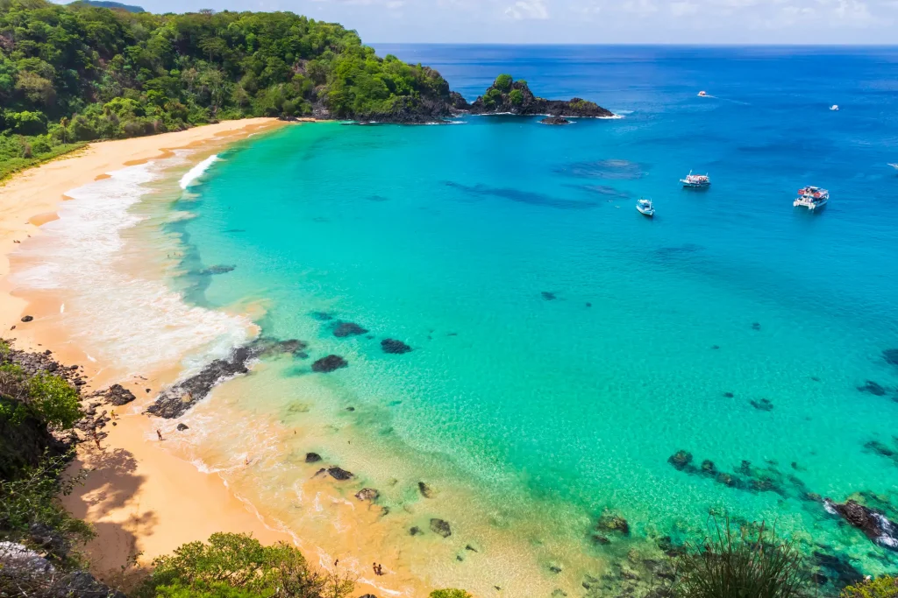
Known for its beautiful semi-tropical Atlantic coastlines, the Northeast also transitions into the Caatinga, a semi-arid interior scrubland presenting unique climatic weathering processes.
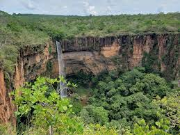
Dominated by the Cerrado savanna biome and the vast Pantanal wetlands. It houses the federal capital, Brasília, and represents Brazil's massive agricultural core.
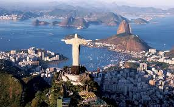
The economic powerhouse containing São Paulo and Rio de Janeiro. Geographically defined by complex coastal escarpments and highlands of the Atlantic Forest zone.
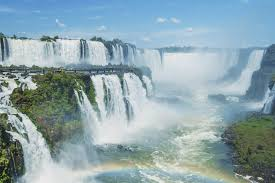
The smallest and coldest region, marked by subtropical climates, temperate pine forests, and massive basaltic plateaus that give rise to landmarks like the Iguazú Falls.

São Paulo state interior — the region where Peterson was born and raised in Jundiaí. 📷 Unsplash
Peterson Pinheiro was born and raised in Jundiaí, São Paulo, a city nestled in the interior of Brazil's most populous and economically dynamic state. This project is a personal exploration of the land that shaped him, an opportunity to understand the geological, climatic, and hydrological forces that created the country he calls home.
Brazil is home to the Amazon River basin, which drains approximately 40% of South America and contains nearly one-fifth of all fresh water flowing into the world's oceans. During flood season the river's width can exceed 50 km — so wide that from the middle of the river you cannot see either bank.
"All things denote there is a God; yea, even the earth, and all things that are upon the face of it, yea, and its motion, yea, and also all the planets which move in their regular form do witness that there is a Supreme Creator." — Alma 30:44
Studying Brazil's geography has deepened my appreciation for this truth. The Amazon Rainforest alone contains an estimated 10% of all species on Earth — a finely balanced system that generates its own rainfall through what scientists call "flying rivers." This interdependent complexity points to a Supreme Creator whose intelligence is written into the natural world.
Maps tell the story of how people understood, claimed, and navigated Brazil across centuries. Below are four maps that reveal Brazil's geographic position, colonial history, territorial evolution, and modern boundaries.

One of the earliest known maps to depict the Brazilian coastline, drawn just two years after Cabral's expedition. It shows "Terra da Vera Cruz" with the Tordesillas Treaty boundary.
🔗 View original map on Wikipedia →Brazil borders 10 of South America's 12 countries — all except Ecuador and Chile — and covers 8.5 million km². Source: OpenStreetMap contributors.
Brazil spans from 5°16'N to 33°45'S — nearly 39 degrees of latitude — explaining its extraordinary biome diversity. Source: OpenStreetMap.
The vast Amazon lowlands contrast with the rugged Brazilian Highlands in the central plateau and southeastern coastline. Source: OpenStreetMap/CyclOSM.
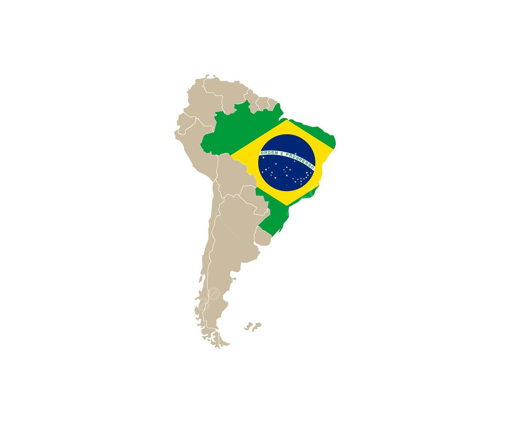
Brazil highlighted within South America — the country occupies roughly 47% of the continent's total land area.
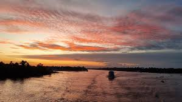
Cabo Orange — Northernmost point (5°16'N), Amapá
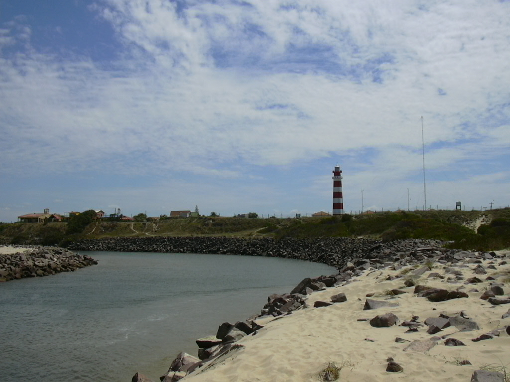
Arroio Chuí — Southernmost point (33°45'S), Rio Grande do Sul
João Teixeira Albernaz I is recognized as the most prolific Portuguese cartographer of the seventeenth century. Formally trained from a young age, he was appointed cartographer to the Casa da Índia (Neatline Maps, n.d.).
Over his career, Albernaz produced 19 atlases containing 215 maps (Wikipedia, 2024). His 1640 Atlas of Brazil consisted of 32 sheets documenting the entire Brazilian coast (Wikipedia, 2024).
Brazil occupies the stable interior of the South American Plate — a position fundamentally different from neighboring Andean nations located along active convergent margins. To the west, the oceanic Nazca Plate subducts beneath the western edge of the South American Plate, generating the Andes Mountains and the earthquakes and volcanoes that regularly affect Chile, Peru, and Ecuador. To the east, the Mid-Atlantic Ridge is a divergent boundary where the South American and African plates are slowly spreading apart at roughly 3 cm per year (USGS, 2002). Brazil sits far from both of these active boundaries, on ancient, cold, thick, and rigid cratonic crust that resists deformation.
The two major ancient crustal blocks beneath Brazil are the Amazonian (Guiana) Craton in the north and the São Francisco Craton in the east-center. These Precambrian shields — some of the oldest exposed rock on Earth, dating back 1.7 to 3.4 billion years — form a stable geological foundation that accounts for why Brazil experiences no active volcanoes and very limited seismic hazard compared to the rest of South America (USGS Open-File Report 02-230).
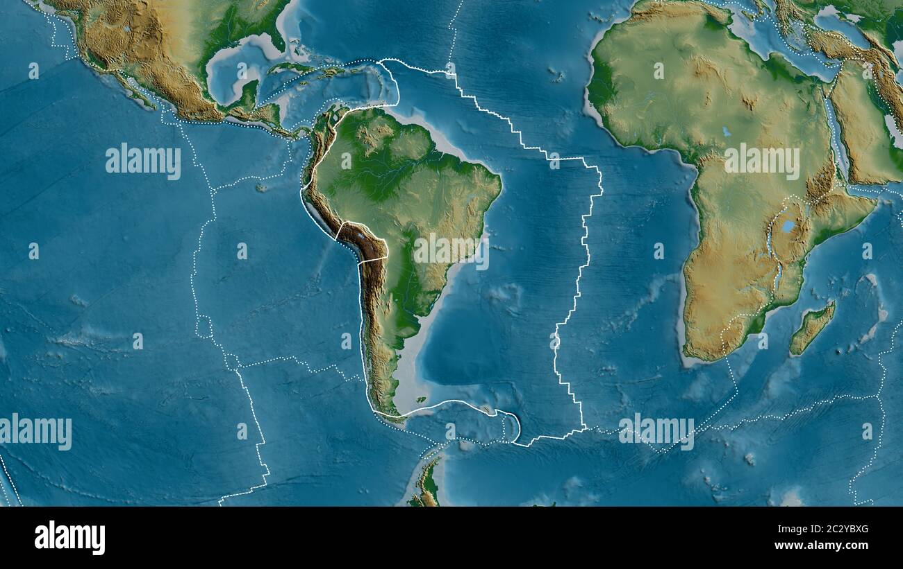
Tectonic plates of South America. Note the South American Plate, the Nazca Plate subducting to the west (creating the Andes), and the Mid-Atlantic Ridge divergent boundary to the east. Brazil's interior sits far from any active boundary.
Because Brazil is intraplate, its earthquakes do not originate from plate boundary collisions. Instead, they result from the slow reactivation of ancient fault zones under the residual stress of the South American Plate's westward movement and compression against the Andean subduction zone. This stress is transmitted hundreds of kilometers into the stable interior, occasionally triggering movement along deeply buried Precambrian fault lineaments (Assumpção et al., 2016).
The USGS Open-File Report 02-230 (Saadi et al., 2002) — a systematic mapping of Brazil's Quaternary faults — documented abundant evidence of fault reactivation across the country despite its apparent stability. The most seismically active intraplate zone in Brazil is the Borborema Province of the Northeast, where the cities of Sobral (Ceará) and João Câmara (Rio Grande do Norte) have experienced damaging earthquake swarms. The Northeast's seismic activity relates to the reactivation of ancient structural lineaments formed during the assembly of the South American and African continents hundreds of millions of years ago.
Serra do Tombador, Mato Grosso (Jan. 31, 1955): Estimated M6.2 — Brazil's largest recorded earthquake. Struck a remote interior region and caused no casualties, but demonstrated that even the stable Brazilian Shield could generate significant seismic energy.
João Câmara, Rio Grande do Norte (1986–1989): A prolonged swarm of over 10,000 small earthquakes, including a M5.1 event in August 1986, damaged hundreds of masonry homes and alarmed the local population. It remains the most economically damaging intraplate seismic sequence in Brazilian history (Assumpção et al., 2016).
Recôncavo Baiano (2020): A series of M4.6 shallow tremors struck the oil-producing region of Bahia, raising concerns about induced seismicity from petroleum extraction operations.
The federal government monitors Brazilian seismicity through the Observatório Sismológico da Universidade de Brasília (SIS-UnB), which operates the Brazilian Seismographic Network (RSBR) — a collaboration between four universities and the Brazilian Geological Survey (SGB). The network provides open broadband seismic data used by researchers to study the crust and mantle structure of the South American Platform (ResearchGate, 2021).
Because intraplate earthquakes are infrequent and usually below M5.0, Brazil's building codes historically lacked seismic provisions. The Brazilian Association of Technical Standards (ABNT) issued NBR 15421 in 2006, establishing seismic design requirements for structures in higher-risk zones — particularly the Northeast. Municipal civil defense agencies in historically active intraplate blocks now incorporate earthquake preparedness into their emergency response plans.
The Precambrian crystalline shields (Guiana and Brazilian Shields) house immense mineral reserves. Brazil contains the world's largest deposits of high-grade iron ore in the Quadrilátero Ferrífero (Minas Gerais) and Carajás region (Pará), plus major reserves of bauxite, manganese, gold, and niobium — Brazil holds approximately 98% of the world's known niobium reserves (DNPM, 2015). These resources are a direct product of billions of years of geological processes operating on ancient igneous and metamorphic basement rocks.
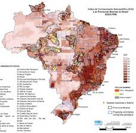
Brazil's major mineral resource deposits, concentrated in the ancient Precambrian shields of Minas Gerais, Pará, and surrounding states.
Environmental note: The Mariana (2015) and Brumadinho (2019) tailings dam collapses caused severe ecological damage to the Doce and Paraopeba river basins respectively, killing hundreds and contaminating water supplies for millions. These disasters transformed Brazilian mining regulation and brought international attention to the human cost of resource extraction on ancient shield terrain.
Because Brazil has not undergone recent orogenic (mountain-building) phases, its mountain systems are ancient, deeply eroded, and low compared to the Andes. Major ranges include the Serra do Mar and Serra da Mantiqueira in the southeast — remnants of a once-towering rift margin formed during Gondwana's breakup. The highest peak, Pico da Neblina, reaches 2,995 meters near the Venezuelan border. The coastal Serra do Mar acts as a topographic barrier against moist Atlantic air masses, triggering heavy orographic rainfall that sustains the high-biodiversity Atlantic Forest ecosystem and fills the reservoirs supplying drinking water to the São Paulo metropolitan region of 22 million people.
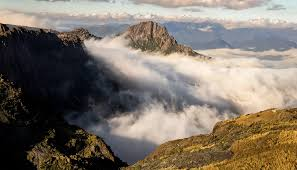
The Serra do Mar coastal escarpment in southeastern Brazil — an ancient rift margin separating the Atlantic coast from the interior plateau.
Modern Brazil has no active or dormant volcanoes. However, during the Mesozoic Era (~130 million years ago), the breakup of Gondwana triggered the Serra Geral magmatic province, one of Earth's largest flood basalt events, generating massive fissure eruptions across southern Brazil and neighboring countries (Milani et al., 2007). The lava flows covered an area exceeding 1.2 million km² to depths of up to 1,700 meters. Weathering of these ancient basaltic flows over tens of millions of years produced the exceptionally fertile dark-red soil known as Terra Roxa ("purple/red earth"), which directly enabled the nineteenth-century coffee boom in São Paulo and Paraná — establishing Brazil as the world's dominant coffee producer, a position it maintains today. The same resistant basaltic layers formed the dramatic structural cliffs and canyon edges that give rise to the Iguazú Falls.
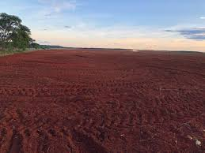
Terra Roxa — the distinctively dark-red, iron-rich soil produced by the weathering of ancient basaltic lava flows across southern Brazil. This soil is the foundation of Brazil's coffee and soybean agricultural heritage.
This video from the USGS explains how the South American Plate moves, the contrast between Brazil's stable interior and the active Andean margin, and how intraplate stress generates earthquakes far from plate boundaries.
Brazil's warm, humid tropical climate drives intense chemical weathering across most of the country. Hydrolysis — water reacting with minerals in rock — is the dominant process, breaking down silicate minerals and producing the deep, iron-rich laterite and oxisol soils that blanket much of Amazonia and the Brazilian Highlands. Carbonation occurs extensively in limestone karst regions of Minas Gerais and Goiás, where carbonic acid-laden rainwater dissolves carbonate rock, creating cave systems, sinkholes, and karst towers. In the semi-arid Caatinga of the Northeast, mechanical weathering (thermal expansion and contraction, salt crystallization in rock pores) predominates during prolonged dry seasons, fracturing exposed crystalline rock surfaces. The net result of millions of years of chemical weathering across the stable Brazilian Shield is deeply weathered regolith — in some areas the weathered mantle reaches 30–100 meters deep before encountering fresh bedrock (IBGE, 2022).
Amazon / North: Intense hydrolysis under equatorial rainfall; deep laterization; aluminum and iron oxides accumulate to form bauxite deposits.
Southeast Highlands: Hydrolysis + carbonation in karst zones; physical exfoliation (sheeting) on exposed granite domes like Sugarloaf Mountain.
Northeast / Caatinga: Mechanical weathering dominates; salt weathering and insolation cracking fracture exposed rock surfaces during dry periods.
South: Moderate chemical weathering; frost-shattering rare but documented at higher elevations in Rio Grande do Sul in winter.
Brazil's topography, climate, and patterns of informal urban settlement create severe mass wasting risk. Steep coastal escarpments of the Serra do Mar and hillside favelas in cities like Rio de Janeiro and São Paulo are especially vulnerable. The combination of deeply weathered regolith, saturated soils during intense tropical rainfall events, and deforested slopes creates ideal conditions for rapid debris flows, translational slides, and rotational slumps.
The Brazilian highlands experience some of the world's highest landslide fatality rates among non-volcanic nations, with events occurring almost every rainy season from November through March (Tominaga et al., 2009).
The deadliest landslide event in Brazilian history struck the Serrana region of Rio de Janeiro state in January 2011. Unprecedented rainfall — over 250 mm in a single night — triggered hundreds of simultaneous debris flows that swept away entire hillside neighborhoods. The disaster killed more than 900 people and displaced tens of thousands. Scientists noted that the deeply weathered regolith overlying the granitic basement became fully saturated, losing all shear strength and mobilizing as fluid debris. The federal government responded by substantially increasing funding to CEMADEN (Centro Nacional de Monitoramento e Alertas de Desastres Naturais) and establishing a national early-warning siren network (CEMADEN, 2012).
On February 15, 2022, more than 259 mm of rain fell in just three hours in Petrópolis, Rio de Janeiro — the highest recorded since 1932 — triggering over 250 landslides. The city government had commissioned a study in 2017 identifying 15,000 homes at risk, but large-scale evacuations did not occur. The disaster exposed systemic failures in early warning communication, particularly in lower-income hillside neighborhoods. CEMADEN had issued a "very high risk" alert the day before the event (PBS NewsHour, 2022).
Extreme rainfall between February 22–24, 2025 produced record precipitation in the city of Juiz de Fora, Minas Gerais — the heart of Brazil's coffee industry — killing 70 people and displacing over 3,800. World Weather Attribution scientists warned the event is a preview of heavier rainfall expected as global temperatures rise (Climate Centre, 2025). President Lula visited the region and pledged new housing for affected families outside high-risk zones.
Government Mitigation Efforts: Brazil's CEMADEN operates a national network of automated weather stations and rain gauges linked to municipal civil defense agencies. Federal Law 12.608/2012 established the National System for Protection and Civil Defense (SINPDEC). However, the structural problem — dense informal settlements on steep, unregulated slopes — remains unresolved, and climate change is increasing rainfall intensity.
BBC News coverage of the February 2022 Petrópolis landslides — one of Brazil's deadliest mass wasting events — documenting the destruction, government response, and the structural inequality that puts hillside communities at risk.
Water erosion occurs across a spectrum in Brazil. Localized forms — splash, sheet, rill, and gully erosion — are common wherever deforestation has removed protective canopy. However, erosion along Brazil's major river systems operates at a continental scale, profoundly shaping landscapes, economies, and communities. Brazil holds more than 12% of the world's freshwater, and its major rivers drain enormous basins across the continent (Britannica, 2024).

The Amazon River and its drainage basin — the world's largest river system by discharge, draining approximately 40% of South America.
| River | Length | Source Region | Avg. Discharge | Channel Type | Mouth / Outlet |
|---|---|---|---|---|---|
| Amazon | ~6,400 km | Peruvian Andes | ~209,000 m³/s | Braided & meandering | Atlantic Ocean — large delta/estuary near Marajó Island |
| Paraná | ~4,000 km | Paranaíba + Grande rivers (Minas Gerais highlands) | ~17,500 m³/s | Meandering; braided in upper reaches | Río de la Plata estuary (Argentina/Uruguay) |
| São Francisco | 2,914 km | Canastra Mountains, Minas Gerais (1,450 m elevation) | ~2,943 m³/s | Meandering; interrupted by falls | Atlantic Ocean, near Piaçabuçu (Alagoas/Sergipe border) |
| Madeira | ~3,250 km | Bolivian Andes (as Río Beni) | ~31,200 m³/s | Meandering lowland | Amazon River (major tributary) |
| Tocantins | ~2,416 km | Goiás / Mato Grosso highlands | ~13,600 m³/s | Meandering | Pará River / Amazon delta |
Streambank erosion along the Amazon is one of the most visually dramatic erosion processes in the world. The river constantly erodes its outer meander banks while depositing sediment on inner banks — a process that collapses riverside communities, destroys agricultural land, and threatens indigenous villages. In the Peruvian and Brazilian Amazon, terras caídas ("fallen lands") describes the sudden mass collapse of riverbanks into the river, taking structures, crops, and sometimes lives with them.
Along the São Francisco River, channel incision below dammed reaches (following construction of multiple hydroelectric reservoirs) has dramatically altered sediment transport, reducing the river's delta and threatening the livelihoods of artisanal fishermen in Alagoas and Sergipe (ANA, 2020).
Brazil's National Water Agency (ANA) regulates river management and has invested in bank stabilization programs along densely populated river corridors. The TRANSPOSIÇÃO — Brazil's São Francisco River Integration Project — diverts water from the São Francisco into semi-arid Northeastern Brazil, reducing erosive flow in its lower reaches while addressing water security for 12 million people in the Caatinga region.
Along the Paraná, Brazil and Paraguay jointly operate the Itaipu Dam (the world's second-largest hydroelectric plant by annual output), which has fundamentally altered the river's sediment budget and floodplain dynamics downstream into Argentina.
Wind erosion is not a dominant process across most of Brazil's humid tropical regions. However, it plays a measurable role in two distinct zones. In the Lençóis Maranhenses of Maranhão state — a 1,500 km² coastal dune field — strong seasonal trade winds drive significant aeolian sand transport, constantly reshaping the white quartz dunes (though the seasonal rains fill the interdune troughs with freshwater lagoons, creating a globally unique landscape). In the semi-arid Caatinga of the Northeast, soil deflation (the removal of dry, unprotected topsoil particles by wind) accelerates during drought years when vegetation cover is lost, contributing to desertification. The federal government's Conecta Caatinga initiative, launched in 2025, aims to combat this through native vegetation restoration and sustainable land use policies (Agência Brasil, 2025).
Brazil has no true hot deserts, but it faces a serious and growing desertification crisis in its semi-arid interior. The Caatinga biome — the world's most biodiverse semi-arid ecosystem — covers approximately 730,000 km² across nine Northeastern states and is home to 39 million people. It is not a desert, but sustained deforestation, overgrazing, and climate-change-driven drought are pushing large areas toward irreversible soil sterilization.
According to satellite analysis, approximately 126,336 km² — or 12.85% of the Caatinga's total area — is already in an active desertification process (Mongabay, 2023). Research projects that under the RCP8.5 emissions scenario, areas of high desertification susceptibility could expand by nearly 20% by 2045 (ScienceDirect, 2018).
The Brazilian government established URAD (Unidade de Recuperação de Áreas Degradadas) under Federal Law 13,153/2015 to implement the National Policy to Combat Desertification. In late 2025, the government launched the PAB-Brasil plan with BRL 90 million (approximately USD 16.6 million) in funding, creating new protected areas and enrolling communities in payment-for-environmental-services programs (Agência Brasil, 2025; UNCCD, n.d.).
The Lençóis Maranhenses, while visually dramatic, is a natural coastal dune field classified as a reg (hard-surfaced) and erg (sand dune) landscape rather than a true desert — it receives rainfall well above the desert threshold (>250 mm/year), and seasonal lagoons form between the dunes each rainy season.
Brazil has no active glaciers and no permanent ice or snowpack at any elevation. The country's low maximum elevation (Pico da Neblina at 2,995 m) and tropical-to-subtropical latitudinal range preclude permanent glaciation today. However, Brazil bears extensive evidence of Pleistocene glaciation and periglacial processes: in the highlands of Rio Grande do Sul and Santa Catarina, periglacial landforms such as patterned ground, stone stripes, and frost-shattered rock debris are preserved, documenting colder climatic conditions during the Last Glacial Maximum (~20,000 years ago) when temperatures across southern Brazil were 5–8°C cooler than today (IBGE, 2022). These ancient glacial soils in the south contribute to the deep, fertile molisols and alfisols that support modern soybean and wheat agriculture in Rio Grande do Sul.
Flooding is one of the most destructive and recurrent natural hazards in Brazil. The combination of intense tropical rainfall, highly urbanized floodplains, deforestation, and informal settlements in drainage basins creates devastating flood risk across multiple regions each year. Brazil's rainy season (October–March in the southeast; March–August in the Amazon) regularly overwhelms drainage infrastructure.
In April–May 2024, unprecedented rainfall driven by a combination of El Niño conditions and anthropogenic climate change triggered catastrophic flooding across Rio Grande do Sul. The disaster displaced approximately 600,000 people and caused over 180 deaths — the worst natural disaster in Brazil's recorded history. A persistent high-pressure system over the South Atlantic blocked normal westerly flow, enabling moisture to pile up over the state for days. Scientists found that climate change had made the event approximately twice as likely and 12% more intense (npj Natural Hazards, 2025).
Precipitation exceeding 600 mm in a single day — including 687 mm in Bertioga alone — struck the northern coast of São Paulo state, killing 36 people, collapsing 50 houses in São Sebastião alone, and blocking the highway linking Rio de Janeiro to the port city of Santos (PBS NewsHour, 2023).
Government Response to Flooding: Brazil's civil defense system has expanded CEMADEN's monitoring network to over 4,500 automated rain gauges and stream gauges. Federal law requires municipalities above a certain population threshold to maintain civil defense early-warning plans. Following the 2024 Rio Grande do Sul disaster, the Lula government pledged a multi-billion-real reconstruction package and accelerated flood-control infrastructure projects.
Brazil's 8,500 km Atlantic coastline is shaped by two major ocean current systems that profoundly influence climate, marine ecosystems, and navigation.

The Brazil Current is a warm, saline western boundary current that flows southward along Brazil's coast from about 10–15°S (near Cabo de São Roque) to the mouth of the Río de la Plata. It is a branch of the South Equatorial Current, driven by southeast trade winds. Water temperatures range from 19–27°C, and salinity averages 35–37 parts per thousand (Britannica, 2024).
The Brazil Current moderates coastal temperatures along the southeast, supporting coral reef systems and productive fisheries. It also transports warm water southward, contributing to the warm winters of the Southern Brazilian coast relative to equivalent latitudes in the Southern Hemisphere.
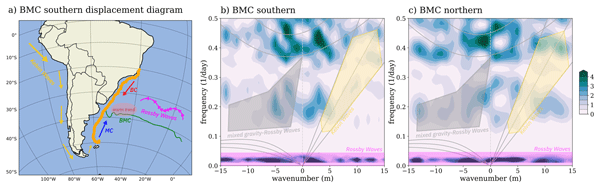
The cold Malvinas Current flows northward from Antarctic waters along the Argentine coast. Where it meets the warm Brazil Current near the Río de la Plata (~38–40°S), the Brazil-Malvinas Confluence creates one of the world's most productive marine zones through vigorous upwelling and mixing (WHOI, 2023).
The collision of these two current systems also acts as a gateway for pollutants — Brazil's coastline effectively receives material transported westward by the South Equatorial Current from across the South Atlantic basin, as demonstrated by the major oil spill events of 2019.
Brazil's coastline stretches 7,491 km (by IBGE measurement) and is predominantly regular in shape — lacking the deeply indented fjords or drowned river valleys characteristic of high-latitude coastlines — because it is a passive margin coastline formed by the rifting of Gondwana rather than active tectonic collision. Its composition varies dramatically by latitude:
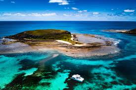
From Amapá to Bahia: a long, relatively straight coastline dominated by sandy beaches, mangrove forests, coral reefs (the largest in the South Atlantic, off Abrolhos, Bahia), and dune fields. The trade winds drive longshore sediment drift from northeast to southwest.
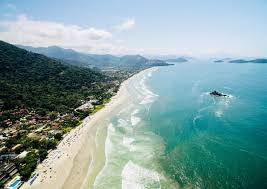
From Espírito Santo to Rio Grande do Sul: increasingly irregular, with rocky headlands of resistant Precambrian crystalline rock (granites, gneisses), embayments, and drowned river mouths forming spectacular settings like Guanabara Bay (Rio de Janeiro) and Ilha Grande Bay. The south transitions to broad, flat sandy barriers and lagoon systems.
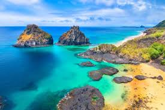
Volcanic archipelago 350 km off the Northeast coast. UNESCO World Heritage Site. Major ecotourism destination and home to a UNESCO Biosphere Reserve, supporting spinner dolphin and sea turtle populations. Brazil's only oceanic island with a resident population.
The world's largest river island (~40,100 km²), located in the Amazon delta in Pará state. Culturally significant as a major buffalo-ranching region; its flat terrain floods seasonally, supporting a unique mosaic of savanna and wetland ecosystems.
Ecological reserve off the Paraná coast. Protected from vehicular traffic; important nesting ground for sea turtles and an increasingly popular tourism destination. Part of the Paranaguá Estuarine Complex — Brazil's largest estuarine system.
Isolated volcanic islands ~1,160 km off Espírito Santo. Under Brazilian Navy administration; host scientific research station. Critical nesting habitat for the globally threatened green sea turtle and the endemic Noronha skink.
Brazil's location in the South Atlantic means it is generally not affected by tropical cyclones — warm-core Atlantic hurricanes virtually never form in the South Atlantic due to high wind shear and cooler sea surface temperatures south of the equator. The sole exception in recorded history occurred on March 26–28, 2004, when Cyclone Catarina — the first documented South Atlantic tropical cyclone — made landfall near the border of Santa Catarina and Rio Grande do Sul states with sustained winds estimated at 140 km/h. The event caused 3–10 deaths and devastated coastal infrastructure in a region completely unequipped for such an event (McTaggart-Cowan et al., 2006).
Brazil is also at very low tsunami risk. Situated on a passive margin far from the subduction zones generating most tsunamis, Brazil has experienced only modest tsunami effects. The 1755 Lisbon earthquake generated a trans-Atlantic tsunami that produced a small but measurable wave along Brazil's northeastern coastline. No destructive tsunamis have struck Brazil in the modern era.
Brazil's geology has shaped its trade infrastructure in fundamental ways. The steep Serra do Mar escarpment separating the coast from the interior plateau historically created a formidable barrier that required heroic engineering to overcome. The Santos–São Paulo railroad, opened in 1867, was engineered with cable-operated inclines to climb the escarpment's near-vertical face — a system still partially in operation today. Modern BR-116 (the backbone of Brazil's north-south highway network) and several rail corridors parallel major geological structures, following ancient river valleys and shield-edge lowlands that minimize grading requirements.
Brazil has over 22,000 km of navigable inland waterways, with the Amazon system alone providing roughly 17,000 km of navigable routes. The Hidrovia Paraná-Tietê connects the agricultural interior of São Paulo and Mato Grosso do Sul to the Paraná River and ultimately to export ports in Argentina — carrying soybeans, sugar, and grains at significantly lower cost than road transport.
Advantage: Very low-cost bulk transport. Disadvantage: Seasonal depth constraints during drought years increasingly disrupt soy shipments from Mato Grosso, as documented during the 2021 Amazon drought.
The port of Santos (São Paulo) is Latin America's largest container port. The port's development was made possible by the natural deepwater anchorage in the Santos Estuary, formed by the drowning of a river valley between granitic coastal hills. Brazil's second-largest port, Itajaí (Santa Catarina), similarly occupies a river-mouth estuary between crystalline basement outcrops.
The geological limitation: most of Brazil's major agricultural producing regions (Mato Grosso, Goiás, Minas Gerais) are separated from deepwater ports by hundreds of kilometers of plateau and escarpment, creating a chronic "logistics bottleneck" that adds cost to Brazilian agricultural exports.
In 2024, Brazil recorded exports totaling USD 400 billion and imports of USD 262.5 billion, resulting in a trade surplus of approximately USD 74.6 billion — the highest in a decade (TradeData Pro, 2025). China is the dominant partner on both sides of the ledger.
CBS News documents the town of Anama, half-submerged as the Amazon reaches near-record flood levels — showing how seasonal river dynamics directly shape life along Brazil's waterways.
Brazil's position astride the equator and extending into subtropical latitudes places it under the influence of multiple global circulation systems. The Intertropical Convergence Zone (ITCZ) migrates seasonally across northern Brazil, bringing intense convective rainfall to Amazonia. The Hadley Cell descending limb creates the semi-arid conditions of the Northeast's interior. The southeast trades deliver moisture from the Atlantic onto the windward slopes of the Serra do Mar, sustaining the Atlantic Forest. In the south, Brazil enters the zone of mid-latitude westerlies, making Rio Grande do Sul the only region of Brazil that experiences distinct four-season weather including occasional winter frosts.
Brazil receives the impacts of the South American Monsoon System — a continental-scale moisture circulation that draws water vapor westward off the Atlantic and northward from the Amazon to produce the November–March wet season across central and southeastern Brazil. Scientists call the southward export of Amazon moisture the flying rivers phenomenon — the Amazon forest transpires so much water that moisture flux over the continent rivals the flow of the Amazon River itself.
Brazil contains six of the Köppen climate classification types, reflecting its enormous latitudinal and altitudinal range (Alvares et al., 2013).

Köppen climate classification map of Brazil. Source: Wikimedia Commons (public domain).
Covers most of Amazonia. No dry season (Af) or brief dry season compensated by heavy rainfall (Am). Annual rainfall typically 2,000–3,500 mm. Consistently hot, >18°C all months.
Covers the Cerrado of Central Brazil and parts of the Northeast and North. Distinct dry winter and wet summer. Annual rainfall 1,200–1,800 mm concentrated in summer months.
The Northeast interior. Annual rainfall 250–800 mm, highly variable. High temperatures year-round. Classified as BSh (hot steppe/semi-arid). Drought years can see near-zero rainfall.
Southern Brazil (Rio Grande do Sul, parts of Santa Catarina and Paraná). Hot summers, mild winters; no dry season. Frost and occasional snow possible in elevated areas in winter.
Higher elevations of southern Brazil (Serra Gaúcha, Planalto Catarinense, parts of Serra da Mantiqueira). Mild summers, cold winters; snow occurs almost annually in Urupema, SC.
Brazilian Highlands of Minas Gerais and parts of São Paulo. Hot or mild summers with distinct dry winters. Major coffee and eucalyptus region. Jundiaí (Peterson's hometown) falls within this zone.
Brazil contains six officially recognized terrestrial biomes plus a marine biome — a combination that makes it one of the world's most biodiverse nations (IBGE, 2022).
The world's largest tropical rainforest, covering approximately 4.2 million km² within Brazil. Contains an estimated 10% of all species on Earth, including 40,000 plant species, 1,300 bird species, and over 3,000 fish species. The Amazon biome has historically united Brazil's indigenous nations — over 100 uncontacted tribes still live within its boundaries — while simultaneously creating a zone of intense conflict over land rights between conservation advocates, agribusiness, illegal mining, and indigenous communities. Ongoing deforestation, recently partially reversed under the Lula government, remains the central social and environmental tension in Brazilian society.
The world's most biodiverse savanna, covering ~21% of Brazil's territory across the central plateau. The Cerrado contains over 11,000 plant species (nearly half of which are endemic), 935 bird species, and 300 mammal species. It is also Brazil's agricultural heartland — roughly 75% of Brazil's soybean, corn, and cotton production comes from converted Cerrado land. This creates a deep social division: agribusiness interests see the Cerrado as an agricultural frontier, while ecologists note that over 50% of the biome has been converted since the 1970s.
Brazil's only exclusively endemic biome — found nowhere else on Earth. Covers 730,000 km² across the semi-arid Northeast. The Caatinga is unique in that its animals and plants have evolved extreme drought-resistance strategies: cacti store water in their trunks, trees drop their leaves in the dry season, and the 3-banded armadillo can curl into a perfect sphere when threatened. It unites Northeastern Brazil culturally through shared experiences of drought and the celebration of resilience in literature, music (forró), and the culture of sertanejo identity.
Once stretching along the entire Atlantic coast and inland for hundreds of kilometers, the Atlantic Forest is now one of the world's most threatened biomes — less than 12% of its original cover remains. Despite this, it still harbors extraordinary biodiversity, including over 2,000 endemic plant species and 148 endemic bird species. It covers the coastal zone from Rio Grande do Norte to Rio Grande do Sul, running directly through Brazil's most densely populated corridor. The Atlantic Forest's fate unites and divides society simultaneously: restoration has broad public support, yet urban growth constantly pressures remaining fragments.
The world's largest tropical wetland (~150,000 km²), spanning Mato Grosso do Sul, Mato Grosso, Bolivia, and Paraguay. The Pantanal floods seasonally — up to 80% of its area inundates each wet season — creating one of the planet's greatest wildlife spectacles: concentrations of giant otters, marsh deer, hyacinth macaws, caimans, anacondas, and the highest density of jaguars anywhere on Earth. Its hydrology is exceptionally vulnerable to upstream deforestation and climate change.
Brazil's southernmost biome, covering the grassland plains of Rio Grande do Sul. Temperate, four-season climate (Cfa/Cfb). The Pampa supports cattle ranching culture stretching from Brazil into Uruguay and Argentina, and is the origin of churrasco (Brazilian barbecue) as a cultural institution. The Pampa has experienced extremely high conversion rates — over 54% converted to soy agriculture and exotic pine/eucalyptus plantations — making it one of Brazil's least-protected biomes.
Brazil experiences several categories of severe weather beyond flooding and landslides. Convective hailstorms regularly damage crops and structures across the southern states and Minas Gerais. Tornadoes are more common in Brazil than most Brazilians realize — the country averages 100 confirmed tornadoes per year, mostly in São Paulo, Santa Catarina, and Rio Grande do Sul, where the clash of warm tropical and cool polar air masses creates favorable conditions (INMET, 2022). Wildfires have become a catastrophic seasonal feature: during the 2024 dry season, Brazil recorded its worst fire year in at least 16 years, with satellite data showing extraordinary fire counts across the Amazon, Cerrado, and Pantanal simultaneously. Drought-amplified fires in the Pantanal burned approximately 30% of the biome in 2024 alone.
A full 50-minute documentary exploring Brazil's Cerrado highlands and its extraordinary wildlife — the world's most biodiverse savanna, right next door to the Amazon.
Açaí palm (Euterpe oleracea): Harvested by Amazonian indigenous communities for millennia; now a multi-billion-dollar global superfood export. Rich in antioxidants, iron, and fatty acids.
Brazil nut tree (Bertholletia excelsa): One of the tallest trees in the Amazon (up to 50 m). Its seeds are a critical protein and selenium source for both indigenous communities and global markets. Notably, the tree can only be pollinated by large-bodied orchid bees — its reproduction depends entirely on an intact forest ecosystem.
Guaraná (Paullinia cupana): Contains twice the caffeine of coffee beans; used medicinally for millennia by the Sateré-Mawé people and now the basis of Brazil's most popular soft drink.
Carnauba wax palm (Copernicia prunifera): Native to the Caatinga. Its waxy leaf coating — used in cosmetics, pharmaceuticals, and food products globally — is harvested sustainably by millions of rural Northeastern families.
Manchineel tree-equivalent: Sandbox tree (Hura crepitans): Found in Amazon floodplains. Its sap causes severe skin blistering and eye damage; its seeds are highly toxic. The tree explosively ejects seeds at up to 70 m/s.
Jatropha (Jatropha curcas): Native to South America; all parts are toxic if ingested, causing severe gastrointestinal distress. Despite this, it has attracted interest as a biofuel crop.
Giant water lily (Victoria amazonica): While not toxic, its leaves — which can reach 3 meters in diameter — are lined with sharp spines on their undersides to deter herbivores. It is Brazil's national flower and a symbol of Amazonian biodiversity.
Stinging tree relatives: Several species of Cnidoscolus in the Caatinga produce urticating (stinging) hairs causing intense pain on contact.
Capybara (Hydrochoerus hydrochaeris): The world's largest rodent is farmed and eaten across the Center-West and South; during Lent, the Catholic Church historically allowed its consumption as "fish" due to its semi-aquatic habits. An important protein source in rural communities.
Pirarucu (Arapaima gigas): One of the world's largest freshwater fish (up to 3 m, 200 kg). A critical food source for Amazonian communities. Community-managed pirarucu fisheries have become a model of sustainable Amazon resource management, demonstrating economic benefits of conservation over extractivism.
Zebu cattle (Bos indicus): While not native, the Nelore breed developed in Brazil from zebu stock is now the basis of Brazil's 220-million-head cattle herd — the world's largest commercial beef herd — central to Brazil's role as the world's top beef exporter.
Lancehead pit vipers (Bothrops spp.): Brazil has more snakebite deaths than any other country in the Americas. The Bothrops jararaca and B. alternatus are responsible for the majority of the 20,000+ annual snakebite cases. The golden lancehead (B. insularis), found only on Ilha da Queimada Grande off São Paulo, is among the world's most venomous snakes.
Brazilian wandering spider (Phoneutria spp.): Considered by the Guinness Book of Records as the world's most venomous spider. Aggressive when threatened; venom causes intense pain, inflammation, and in severe cases priapism and cardiovascular failure. Common in southeastern Brazil.
Electric eel (Electrophorus electricus): Native to the Amazon and Orinoco basins, capable of generating 600-volt discharges strong enough to incapacitate a horse. Not actually an eel but a knifefish, it is the apex electrical predator of Amazonian blackwater streams.
Each section developed with primary and peer-reviewed research as the course has progressed week by week.
Week 2 — Completed ✓
Week 3 — Completed ✓
Week 4 — Completed ✓
Week 5 — Completed ✓
Week 6 — Completed ✓
All sources are listed alphabetically in APA 7th edition format.